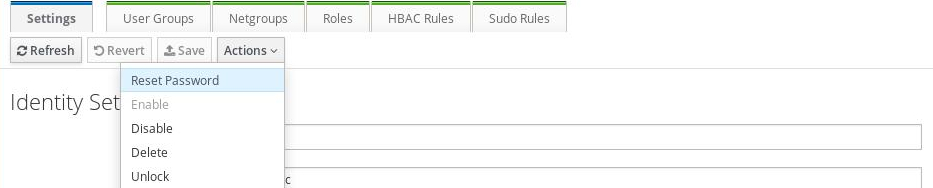
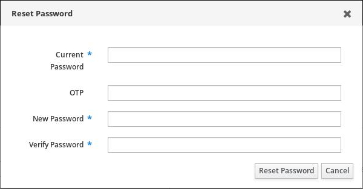

Gestion des mots de passe¶
Changement de mot de passe¶

- Connectez-vous sur https://auth.internux.ch/ipa/ui/
- Cliquez sur le bouton « Actions »
- Sélectionnez « Reset Password »
Une fois l’invite de changement de mot de passe affichée:

- Renseignez le mot de passe actuel
- Entrez au besoin l’OTP (voir plus bas)
- Renseignez et confirmez le nouveau mot de passe
Configuration OTP¶
OTP, pour One-Time-Password, ajoute une couche de sécurité à votre authentification. En activant cette fonctionnalité, vous aurez une authentification à trois clefs, au lieu de deux:
- Nom d’utilisateur
- Mot de passe
- Token temporaire
Le Token temporaire (OTP) est généré par une application tierce, comme c’est le cas pour se connecter à l’e-banking.
Dans le cas du système employé par Internux, il vous faut installer FreeOTP sur Android et iOS.
D’autres applications sont compatibles.
Il est à noter que l’OTP n’est exploitable que pour l’interface https://auth.internux.ch/ipa/ui/, et pas pour la connexion au Webmail ou via votre client mail.